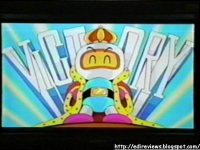

PC FX - Um bom 32 bits
 :::. Por Edi
:::. Por Edi
:::. fonte: http://edireviews.blogspot.com/
Contribuição
do nosso amigo Edi, de uma análise do PC-FX, um console
pouquissimo conhecido por essas bandas, mas que mesmo assim tem sua
historia para contar. E como não conheço pinadíba alguma sobre esse console (pelo menos até agora  ), segue na integra:
), segue na integra:
__________________________________________________
Eu acho interessante a maioria dos sistemas de video game, mas existem muitos que a maioria desconhece. Eu resolvi então divulgar um sistema que apesar do seus defeitos, é um ótimo console e tem parte importante na história dos games. A pesquisa foi dificil porque não existem artigos em portugês detalhando esse sistema. Leiam e vejam o que vocês acham!
Historia
O PC-FX é um console de vídeo game lançado no Japão em 23 de dezembro de 1994 pela NEC Corporation. É o sucessor de 32 bits do NEC PC-Engine, conhecido nos Estados Unidos como Turbografx-16. O PC-FX usa CD-ROMs como meio de armazenamento, na sequência da expansão lançado para o seu antecessor, que originalmente usava HuCards. O controle é semelhante ao controle de 6 botões do Mega Drive devido ao posicionamento dos botões, e idêntico ao controle do PC-Engine DUO-RX, exceto pela alteração do seletor de tiro rápido para seleção de modos.
O projeto do PC-FX foi incomum para consoles na época, pois fica na posição vertical como uma torre de computador, enquanto outros consoles contemporâneos costumavam ser planos. Outra característica interessante são as três portas de expansão que são relativamente pouco utilizadas em consoles, e sua inclusão aumentou o preço sem oferecer uma grande contribuição ao usuário final. No entanto, foi um dos primeiros consoles a ter como opcional um Mouse que fez com que jogos de estratégia como Farland Story FX e Power Dolls FX ficassem mais acessíveis para jogar na TV.
Ao contrário de quase qualquer outro console (com exeção do 3DO), o PC-FX tem disponível uma placa de PC interna compatível com o antigo Nec PC-98 e com o DOS. Esta placa de computador veio com dois CDs de software para ajudar os usuários a programar jogos para o PC-FX. No entanto, havia problemas de compatibilidade impedido que jogos desenvolvidos com este software realmente rodassem no console.
O PC-FX foi concebido com base em um novo kit de 32 bits desenvolvido pela NEC chamado de Iron Man. Iron Man foi concebido em 1992, quando o PC-Engine ainda era muito popular no Japão. Foi por volta dessa mesma época que as primeiras unidades de demonstração foram apresentadas e em meados de 1992, a NEC começou a discutir um lançamento iminente de um sistema baseado na placa Iron Man, com os seus muitos desenvolvedores de jogos terceiros. Muitos desenvolvedores de jogos do PC-Engine pareciam chateados e desinteressados, pois o mercado do PC-Engine continuava a crescer, e como resultado a NEC parou de trabalhar na placa Iron Man e continuou a fazer modificações no PC-Engine. Por volta de 1993, a plataforma 3DO de 32 bits foi lançada e com muito interesse dos desenvolvedores de jogos, da Sega e da Sony, foram anunciados o Sega Saturn e o Sony PlayStation, que estariam prontos para o mercado japonês no final de 1994. E a Bandai também estava preparando o lançamento do seu sistema Playdia. Agora, em uma corrida para manter a base de desenvolvimento e sucesso como foi o do PC-Engine, a NEC tinha que tomar uma decisão. Em vez de gastar o tempo necessário para desenvolver uma nova plataforma mais poderosa, capaz de fazer frente aos seus concorrentes, eles decidiram utilizar naquela época a arquitetura do Iron Man no PC-FX. O resultado foi que a NEC encerrou o seu projeto com um sistema de fraca potência que não impressionou nem os programadores, nem consumidores, nem conseguiu liberar a expansão 3D e levou à sua morte.
 A brilhante qualidade do PC-FX, porém, foi a capacidade de descomprimir
30 imagens JPEG por segundo durante a reprodução de áudio gravado
digitalmente (essencialmente uma forma de Motion JPEG). Isto resultou no
PC-FX uma qualidade em processar FMV (Full Motion Vídeo) muito superior
aos outros concorrentes de quinta geração, fazendo com que jogos de
qualidade nesse genero fossem lançados, mas esse estilo de jogo não
foi muito bem aceito pelos consumidores que esperavam belas conversões
de Arcade e grandes sequencias em 3D dos jogos de PC-Engine.
A brilhante qualidade do PC-FX, porém, foi a capacidade de descomprimir
30 imagens JPEG por segundo durante a reprodução de áudio gravado
digitalmente (essencialmente uma forma de Motion JPEG). Isto resultou no
PC-FX uma qualidade em processar FMV (Full Motion Vídeo) muito superior
aos outros concorrentes de quinta geração, fazendo com que jogos de
qualidade nesse genero fossem lançados, mas esse estilo de jogo não
foi muito bem aceito pelos consumidores que esperavam belas conversões
de Arcade e grandes sequencias em 3D dos jogos de PC-Engine.
Contudo, a NEC se tornou muito mais liberal do que a maioria das empresas no que diz respeito aos títulos que permitiu lançamentos para a plataforma, em uma tentativa de conseguir apoiar seu desenvolvimento. Como resultado, o PC-FX ganhou uma grande reputação por sua abundância de jogos em hentai e títulos de simulação de namoro. Tem também alguns jogos de ação padrão e um modesto número de jogos de RPGs e estratégia, mas a maioria dos jogos exigem um certo nível de conhecimento no idioma japonês para se jogar ou muita paciência. No entanto a maioria dos jogos são Text Adventure, o que pode tornar mais fácil para aqueles com conhecimento limitado de japonês, a apreciar os jogos.
No total foram lançados 62 jogos oficiais para o sistema. Os títulos na data de lançamento (23 de dezembro de 1994) foram Graduation 2: Neo Generation FX, Battle Heat e Team Innocent, e o ultimo jogo lançado foi First Kiss Monogatari em 24 de abril de 1998. O sistema e todos os títulos foram lançados somente no Japão. Uma série de discos de demonstração também foram liberados com publicações que permitiam ao usuário reproduzir o disco no PC-Engine ou no prórpio PC-FX.
Não havia nenhuma proteção contra cópia de qualquer um dos jogos de PC-FX, porque na época em que o sistema foi lançado, os gravadores de CD e CD-R tinham um alto valor de aquisição.
O PC-FX foi descontinuado no início de 1998. No momento da interrupção da produção do console, de acordo com o NEC, o PC-FX tinha vendido um pouco menos de 100.000 unidades. Dai nós podemos tirar nossas prórpias conclusões e os fabricantes de vídeo games também. O que realmente matou o PC-FX, não foi a ausência de jogos tridimensionais e conversões de Árcade, mas sim, a pouca variedade de jogos. Se a Nec tivesse lançado o PC-FX nos EUA, seu sucesso talvez seria maior com a tradução de alguns jogos para o inglês e o interesse de outras softhouses para desenvolvimento de jogos.
O Best Seller do Nec PC-FX foi Kishin Douji Zenki FX: Vajura Fight, que vendeu praticamente 1 jogo por console fabricado, o que é um bom número. Vale salientar também que a NEC tentou empurrar o PC-FX sem ajuda da Hudson Soft, e alem de Kishin Douji Zenki, seus outros dois jogos mais vendidos também eram da Hudson Soft.
Alguns fatos e rumores sobre o sistema
FX-Fighter - Este título foi uma demonstração do que o PC-FX poderia fazer antes que ele realmente torna-se disponível. Não se sabe se ele foi um verdadeiro jogo ou apenas uma imagem em FMV de alguns lutadores polígonais muito bem feitos, mas de acordo com o demonstrativo apresentado na Tokyo Toy Show 1994, parecia que era jogável. Tudo parecia bem para os gráficos computadorizados, porém, o motivo foi que o jogo teria ultrapassado o espaço de armazenamento do CD-ROM, devido a muitas cenas de alta qualidade em FMV.
 |
 |
FX Fighter nunca foi lançado no mercado aberto. O jogo que foi demonstrado na Tokyo Toy Show de 1994 inha apenas dois personagens, mas tinha sido relatado que entre 3 a 4 personagens estavam sendo finalizados. A jogabilidade era baseada no jogo mais tarde lançado com o nome de Battle Heat, que também usou FMV para representar movimentos, no entanto, parecia que FX Fighter não tinha um sistema de jogo bastante elaborado.
Lords of Thunder FX - Pouco antes e logo depois do lançamento do PC-FX, a NEC liberou algumas fotos para revistas especializadas em vídeo game, mostrando um dos chefes de fase do jogo de PC-Engine Lords of Thunder com gráficos poligonais. Estas fotos foram suficientes para levar as pessoas a falar sobre este sistema. Não se sabe se as fotos apresentadas se tornaram um jogo real, ou se mesmo pronto ele nunca foi apresentado ao público.
Super Star Soldier 3D - O mesmo lote de fotos que a Nec liberou, também teve o que parecia ser um tipo diferente de Shooter para o PC-FX. O nome Super Star Soldier 3D foi anexado às fotos, tornando-se assim um jogo que nunca mais foi visto. Este título aparentava ser uma suposta continuação da série Super Star Soldier feita para o PC-Engine, porém, com sprites mais detalhados e alguns elementos em 3D. As fotos da renderização do navio era tudo o que estava disponível e, como vemos agora, nunca a NEC trouxe este título para o público.
Hi-Ten Bomberman - Hi-Ten Bomberman foi um jogo originalmente planejado para ser lançado no PC-FX, no entanto, devido às diretrizes de publicação da NEC, Hi-Ten Bomberman nunca foi lançado para o console. O jogo, em sua forma original nunca foi disponibilizado para venda, mas no entanto fez uma aparição no Hudson Soft Caravan em 1993 como parte de uma competição. Hi-Ten Bomberman foi uma versão de 10 jogadores do popular jogo de PC-Engine Bomberman, e foi formatado para jogar em HDTV Wide Screen. Foi o primeiro jogo feito para esse formato. Você pode jogar com muitos personagens diferentes, como Bonk ou Bomberman homem ou mulher e outros mais. Acredita-se que a Hudson Soft liberou mais tarde essa versão, um pouco refeita, como Saturn Bomberman, que inclui o modo de jogo de dez jogadores em HDTV Wide Screen. Saturn Bomberman é basicamente o que a versão PC-FX deveria ter sido.
|  |
Tengai Makyou III: NAMIDA - Tengai Makyou também conhecido como Far East of Eden no ocidente, é uma das séries de RPG mais popular no Japão, sendo lançado em várias plataformas ao longo dos anos, e a versão do PC-FX teria continuado a saga. Anunciado em 1995, Tengai Makyou III: Namida era muito esperado pelos fãs do PC-FX, mas foi cancelada devido à eventual falha do sistema. Isso foi muito infeliz por que o jogo foi relatado em um estágio avançado de desenvolvimento. Os fãs do PC-FX no Japão, fizeram várias tentativas para convencer a Hudson Soft para liberar o jogo, mas a Hudson Soft afirmou que a previsão de vendas do título seria muito baixa e que eles precisavam fazer um lucro. Esse jogo foi lançado em 2005 em uma forma totalmente refeita para PS2 e cancelado para o Nintendo Game Cube.
Especificações técnicas
- CPU
- MEMÓRIA
- VÍDEO
- GRÁFICOS
- SOM
16-Bit Stereo w/2 canais ADPCM e 6 canais auxiliares de 44.1kHz.
Saida de Audio: 1.0 Vrms (0db)
Frequencia Sonora: 20Hz~20kHz - DRIVE DE CD
Padrão 2x CD-ROM drive compativel com CDs de 8mm e 12mm - ENTRADAS/EXPANSÕES:
2 terminais para controle
EXT1 (para cartão de memória)
EXT2 (para funções extra)
EXT3 (para expansão da memória principal) - DIMENSÕES:
132mm (largura) x 267mm (comprimento) x 244mm (altura) - FORMATO:
FX-CD, CD-DA, CD+G, CD+EG, Photo CD - CONSUMO DE ENERGIA
16W / AC 100V - PESO:
Aproximadamente 2.9kg
Acessórios
NEC PC-FX Controller – O controle do PC-FX possui um direcional com 8 direções, botão Select e Run como no PC-Engine, e seis botões de ação como o controle do PC-Engine Duo-RX e mais dois seletores que servem para mudar as funções dos botões para alguns jogos.
NEC PC-FX FX-BMP - O FX-BMP é o módulo de expansão de memória para o PC-FX. O PC-FX só tinha 32KB de RAM de backup e por causa de todos os RPG/Simulção lançados para o sistema, a memória extra do FX-BMP era obrigatória.
NEC PC-FX Mouse - O mouse do PC-FX veio a calhar para os jogos que usavam o estilo ponto-e-clique, tais como a série Freak Anime, alguns RPG e vários jogos de estratégia e simulação. Jogos que suportam o mouse estão marcados com o ícone do mouse na caixa do CD.
NEC PC-FX SCSI Adapter - O adaptador SCSI do PC-FX permite que os donos dos computadores da série NEC-9800, utilizem o drive de CD do PC-FX como um drive de CD-ROM externo.
NEC PC-FXGA/98IF - O PC-FXGA foi um acessório lançado pela NEC que permitia aos usuários com bons conhecimentos de programação, desenvolvessem jogos para a plataforma. Haviam grupos no Japão, que dedicaram-se a fazer projetos para o PC-FX e jogos demo. Por causa da barreira do idioma, o desenvolvimento dessa tecnologia nunca se epandiu para os proprietários do PC-FX nos EUA e países da Europa.
É isso aí pessoal. Foi bem difícil traduzir e fazer com que houvesse uma coerência. Se tiver algum erro ou falta de informação gostaria que me enviassem um e-mail ok? As figuras e boa parte do texto foram extraídas de PC-FX World, Vídeo Game Museum . Você pode baixar o emulador e alguns jogos de PC-FX se cadastrando no Fórum SEGA-Forever.
Acesse o Trombone e comente sobre essa matéria!


construindo - construindo -construindo - construindo -construindo - construindo -construindo - construindo -construindo - construindo